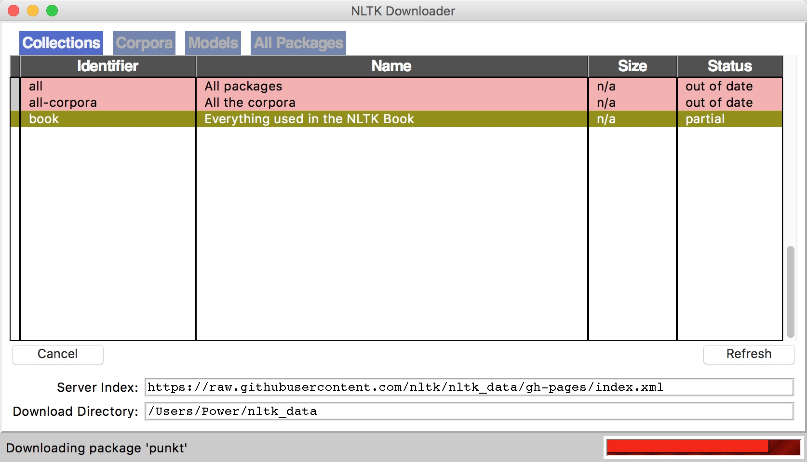

NLTK (Natural Language Toolkit)
NTLK是著名的Python自然语言处理工具包，但是主要针对的是英文处理。NLTK配套有文档，有语料库，有书籍。
- NLP领域中最常用的一个Python库
- 开源项目
- 自带分类、分词等功能
- 强大的社区支持
- 语料库，语言的实际使用中真实出现过的语言材料
- http://www.nltk.org/py-modindex.html
在NLTK的主页详细介绍了如何在Mac、Linux和Windows下安装NLTK：http://nltk.org/install.html ，建议直接下载Anaconda，省去了大部分包的安装，安装NLTK完毕，可以import nltk测试一下，如果没有问题，还有下载NLTK官方提供的相关语料。
安装步骤：
下载NLTK包
pip install nltk运行Python，并输入下面的指令
import nltk nltk.download()弹出下面的窗口，建议安装所有的包 ，即
all
测试使用：